方向 C · 它自己的生活 — 瑞士网格 Swiss / Bauhaus
米白纸底 + 三原色 + 黑,一共五个颜色。栏网格是真的画出来的,内容全部左对齐到栏; 圆、半圆、方、三角是海报的构成元素和分区标记,大而少、精确、纯平面色块, 无描边无材质——像丝网印在纸上。和 bento 相反:形状不是容器,版面不铺满; 和 terrazzo 相反:形状不碎不密,一屏最多两三个;和 vitrail 相反:没有铅条描边, 只有实色平涂和留白。
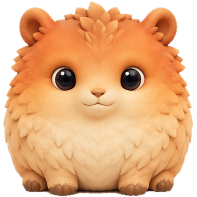
它出门了
大概傍晚回来
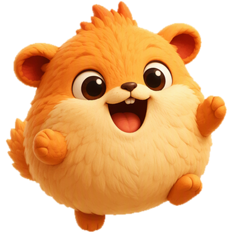
它回来了
带回一颗果子
9:41
图鉴 · 第 01 页
7 样 · 还有很多没见过
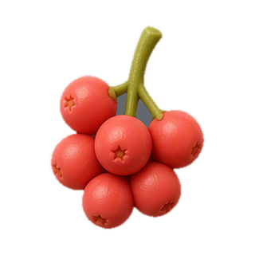
New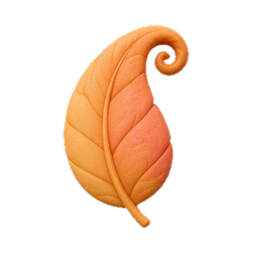
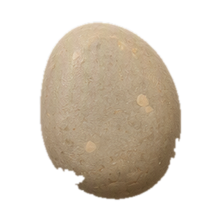
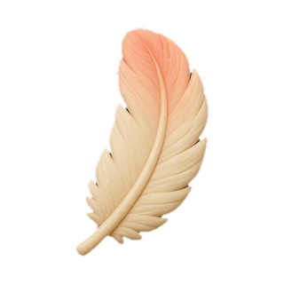
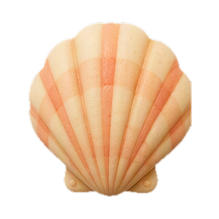
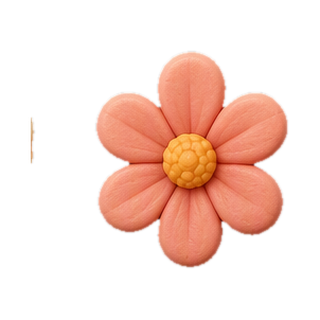
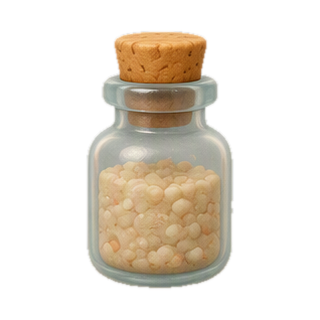
集齐解锁新的散步路线,缺的两样在湖边
日记 · 第 02 页
它自己的视角,不是你的记录
今天走得比平常远。你好像也走了不少,我们大概错过了。带了一颗果子回来。
窗台那边太阳很好,躺了一会儿。你一直没回来。
再往前就翻不到了 · 它也没打算全记住
它 · 第 03 页
在家 · 刚回来
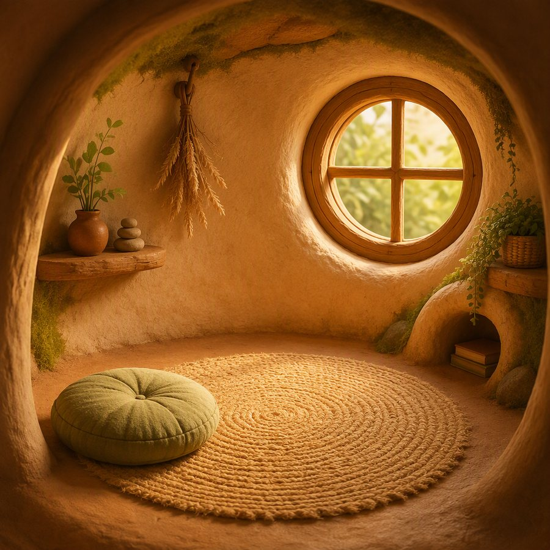
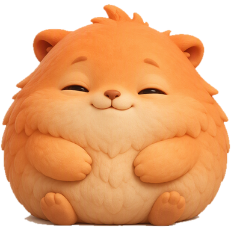
对着什么发呆